01. Mở File Explorer
Sử dụng tổ hợp phím Windows + E hoặc nhấp vào biểu tượng thư mục trên thanh tác vụ để mở File Explorer.
01
Bài tập này rèn luyện kỹ năng thao tác với tệp tin và thư mục trên hệ điều hành Windows, bao gồm tạo thư mục, tạo tệp văn bản, đổi tên, sao chép, di chuyển, xóa tệp, xóa vĩnh viễn và khôi phục tệp từ Thùng rác.
Sử dụng tổ hợp phím Windows + E hoặc nhấp vào biểu tượng thư mục trên thanh tác vụ để mở File Explorer.
Trong File Explorer, chọn This PC, sau đó truy cập vào ổ đĩa D:, E: hoặc thư mục Documents nếu máy chỉ có ổ C:.
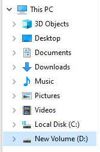
Nhấp chuột phải vào khoảng trống, chọn New → Folder, sau đó đặt tên thư mục là ThucHanh_NguyenTheHaiLong.
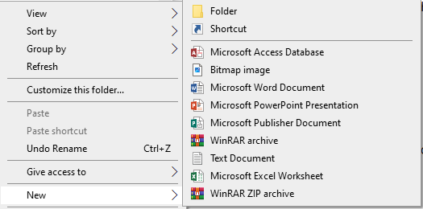
Mở thư mục vừa tạo, nhấp chuột phải vào khoảng trống, chọn New → Text Document và đặt tên tệp là GhiChu.txt.
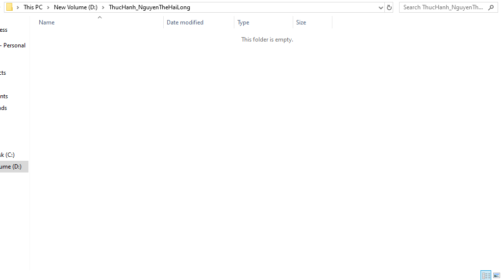
Nhấp chuột phải vào tệp GhiChu.txt, chọn Rename, sau đó đổi tên thành GhiChuQuanTrong.txt.
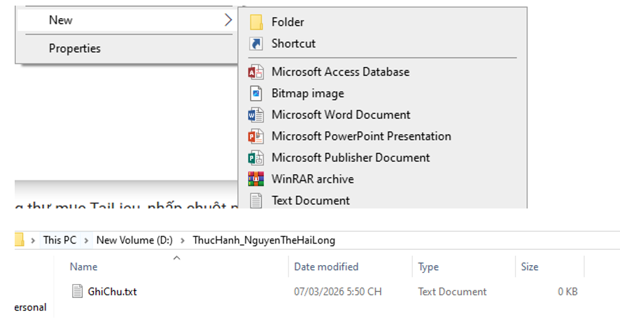
Trong thư mục thực hành, tạo thêm một thư mục con tên là TaiLieu để chứa các tệp được sao chép hoặc di chuyển.
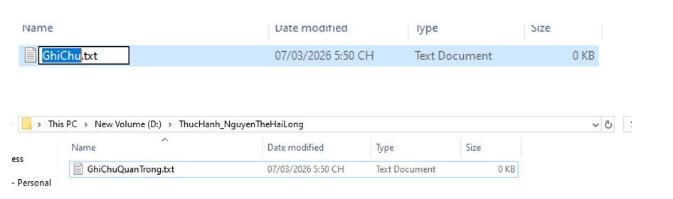
Chọn tệp GhiChuQuanTrong.txt, nhấn Ctrl + C, mở thư mục TaiLieu, sau đó nhấn Ctrl + V. Thao tác này tạo ra một bản sao của tệp.
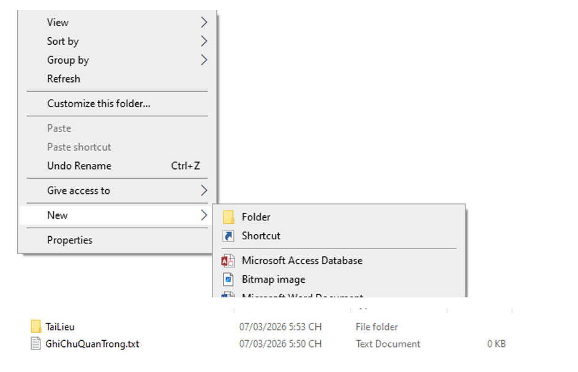
Tạo tệp mới tên DiChuyen.txt, chọn tệp và nhấn Ctrl + X, sau đó vào thư mục TaiLieu và nhấn Ctrl + V. Tệp sẽ biến mất khỏi vị trí cũ và xuất hiện ở vị trí mới.
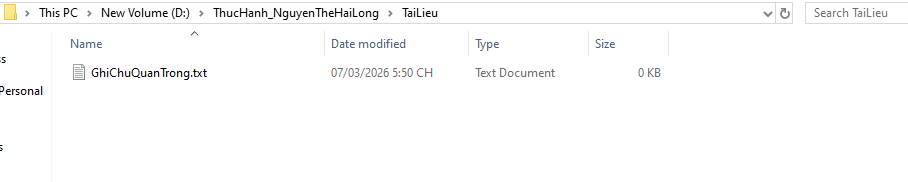
Trong thư mục TaiLieu, nhấp chuột phải vào GhiChuQuanTrong.txt và chọn Delete. Tệp sẽ được chuyển vào Recycle Bin.
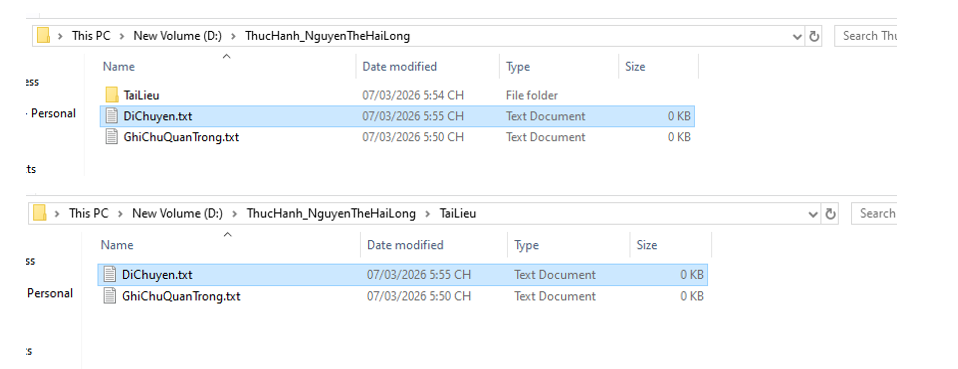
Chọn tệp DiChuyen.txt, giữ phím Shift và nhấn Delete. Nếu xác nhận, tệp sẽ bị xóa vĩnh viễn và không đi qua Thùng rác.
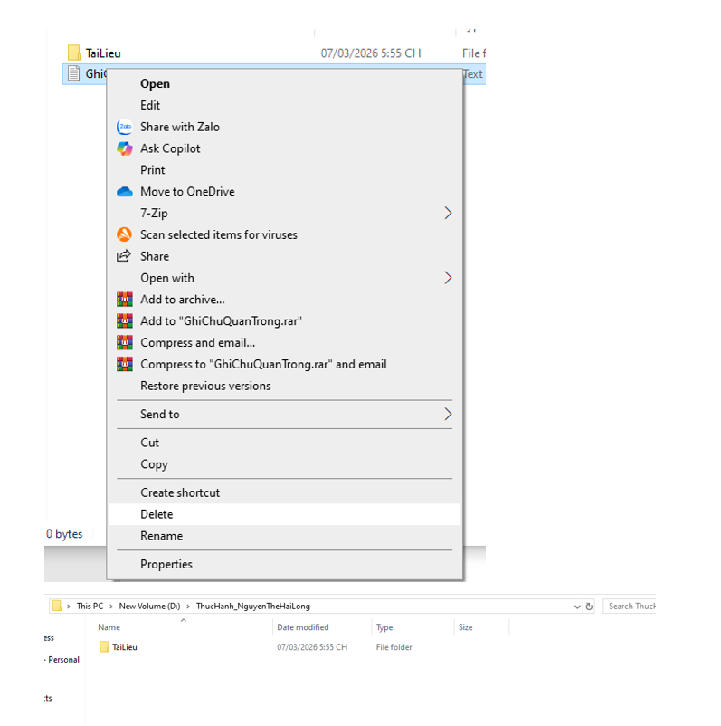
Mở Recycle Bin, tìm tệp GhiChuQuanTrong.txt, nhấp chuột phải và chọn Restore để khôi phục tệp về vị trí ban đầu.
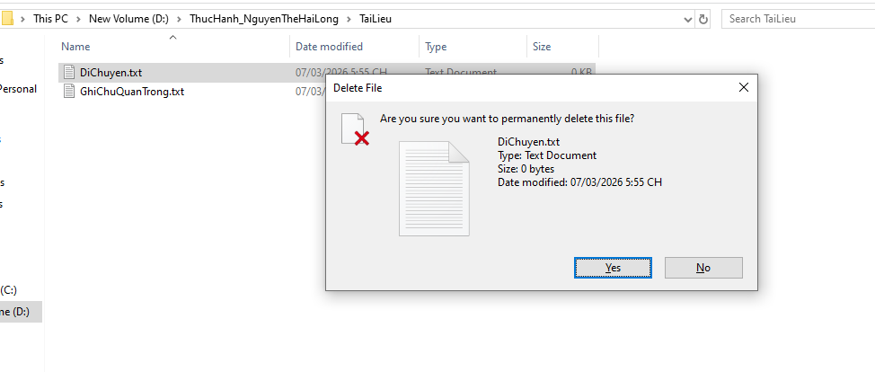
Sau khi hoàn thành bài tập, em đã thực hành được các thao tác cơ bản với tệp và thư mục, phân biệt được sao chép và di chuyển, biết xóa tệp vào Thùng rác, xóa vĩnh viễn và khôi phục tệp.
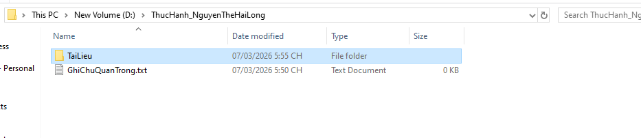